笔记内容学自链接视频：https://www.bilibili.com/video/BV1V4411p7EF
多线程概述
程序
程序是指令和数据的有序集合，本身无运行的含义，是一个静态的概念
进程
进程是程序的一次执行过程，是一个动态的概念。是系统资源的分配单位
线程
在一个进程中可以包含多个线程，且至少有一个线程
多线程即在一个进程中同时运行多个线程
main函数就是一个线程
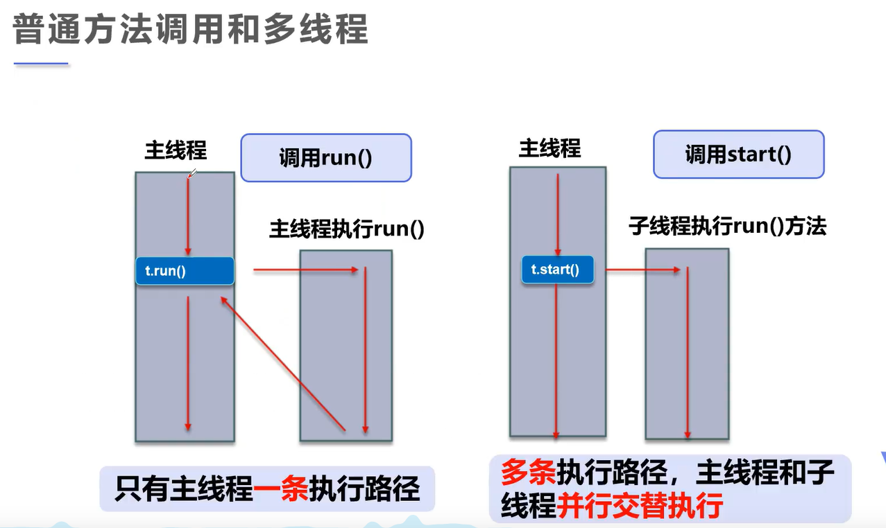
创建线程
运行一个程序，会默认的出现两个线程————守护线程和主线程
创建一个线程有三种方式
一、继承Thread类创建线程
在创建的子线程中，run()方法的地位和用法相当于主线程的main()方法，所以继承Thread类后必须重写run()方法
运行子线程的步骤：
继承
Thread类重写
run()方法主线程/函数/
main()调用start()方法开启子线程如果调用
run()方法，程序会按代码顺序正常执行开启子线程，程序会同时运行
import HelloWorld.多线程.继承类创建线程;
import static java.lang.System.out;
public class Main {
public static void main(String[] args) {
继承类创建线程 xianc = new 继承类创建线程();
xianc.start();
for (int i = 0; i < 500; i++) {
out.println("慧慧早安。");
}
}
}
package 多线程;
public class 继承类创建线程 extends Thread{
@Override
public void run() {
System.out.println("慧慧可爱大方美丽漂亮。");
}
}
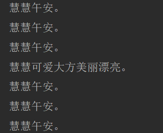
线程开启不一定立即执行，由CPU调度执行
二、重写Runner接口创建线程
相比起直接继承类，重写接口有更好的适用性
直接继承只能是单继承，而重写接口可以实现多继承
步骤
- 调用
Runner接口 - 重写
run()方法 new Thread(),将new的子线程对象丢进去
import static java.lang.System.out;
public class Main {
public static void main(String[] args) {
实现Runnable接口创建线程 RN = new 实现Runnable接口创建线程();
new Thread(RN).start();//这里可以给子线程起名，格式如 `new Thread(RN,"线程1").start();
for (int i = 0; i < 100; i++) {
out.println("有趣的灵魂终会相遇");
}
}
}
package 多线程;
public class 实现Runnable接口创建线程 implements Runnable{
@Override
public void run() {
System.out.println("比如慧慧和我");
}
}
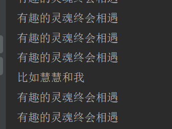
静态代理模式
如同我们所看到的一行代码
实现Runnable接口创建线程 RN = new 实现Runnable接口创建线程();
new Thread(RN).start();//这里可以给子线程起名，格式如 `new Thread(RN,"线程1").start();
这样将一个类丢进另一个类的做法，叫做静态代理
为其他对象提供一种代理以控制这个对象的访问。在某些情况下，一个客户不想或者不能直接引用另一个对象，而代理对象可以在客户端和目标对象之间起到中介的作用。
简单来说就是用一个代理对象来间接调用真实对象，达到更安全，简洁以及在真实对象的基础上进一步操作的用途

比如实例代码
package 多线程;
interface Class {
void people();
}
public class 静态代理模式 {
public static void main(String[] args) {
new Study(new Teacher()).people();
}
}
class Study implements Class {
private Class teacher;
public Study(Teacher teacher) {
this.teacher = teacher;
}
public void people() {
System.out.println("这是一个学生");
this.teacher.people();
}
}
class Teacher implements Class {
public void people() {
System.out.println("这是老师A");
}
}
三、重写Callable类接口创建线程
使用场景少，只作为了解
步骤：
- 实现
Callable类 - 重写
call方法 - 主线程创建执行服务
- 提交执行
- 获取结果
- 关闭服务
注意：
- 使用
Callable类创建子线程必须有返回值 - 获取结果时必须进行异常处理，监测或抛出均可
package 多线程;
import java.util.concurrent.*;
public class 实现Callable接口创建线程 implements Callable<String> {//必须声明返回值，否则类型为Object
@Override
public String call() throws Exception {
return "坐等开学";
}
public static void main(String[] args) {
实现Callable接口创建线程 sx = new 实现Callable接口创建线程();
ExecutorService ser = Executors.newFixedThreadPool(1); //创建线程池
Future<String> ser1 = ser.submit(sx); //提交执行
try {
String hui = ser1.get(); //获取结果（必须抛出异常）
System.out.println(hui);
} catch (Exception e) {
e.printStackTrace();
}
ser.shutdown(); //关闭服务
}
}
Lamda
函数式接口
当一个接口有且仅有一个抽象方法时，这个接口可以称为函数式接口
例如：
interface Me{
void my(int a);
}
Lamda表达式
当程序调用一个函数式接口时，可以对这个接口的重写进行简写，这种简写的格式叫做Lamda表达式
例如:
package 多线程;
interface Me{
void my(int a);
}
public class Lamda表达式 {
public static void main(String[] args) {
Me me = (a)-> {
System.out.println("我是Atmujie");
System.out.println("传值；" + a);
};//Lamda表达式
/*
Lamda表达式的语句体格式:
引用类型(接口名) 变量名 = (形参变量名【有几个写几个，没有就留空，变量类型写不写均可】) -> {
要执行的语句;
}
*/
me.my(123);//调用
}
}
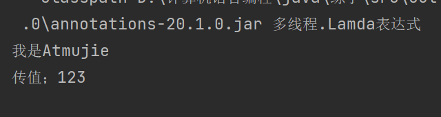
在多线程中，Lamda表达式的意义在于快速的创建线程，当然同样可以使用匿名内部类达到同样的效果
Lamda从某种意义上来说，是对匿名内部类的再简化
public class Lamda表达式 {
public static void main(String[] args) {
Runnable runnable = ()->{
System.out.println("歪比歪比");
};
System.out.println("歪比巴布");
new Thread(runnable).start();
}
}
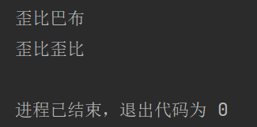
线程控制
线程状态
线程有五大状态
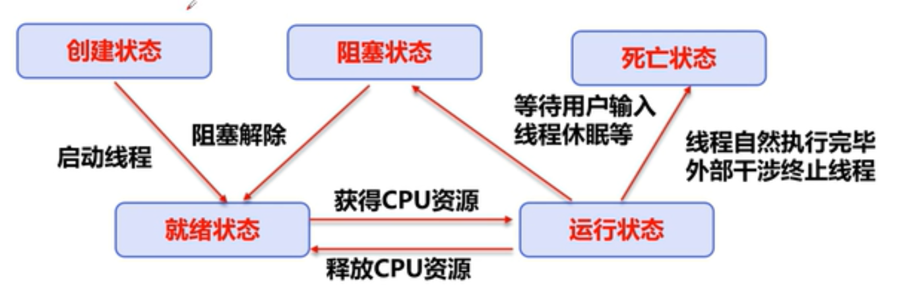
创建状态：
当
new一个线程时，线程进入创建状态就绪状态
当调用
start()方法时，线程进入就绪状态运行状态
线程自动获取CPU资源，获取成功即进入运行状态
阻塞状态
当遇到类似
sleep的情况，线程进入阻塞状态死亡状态
线程结束，进入死亡状态
观测线程#状态
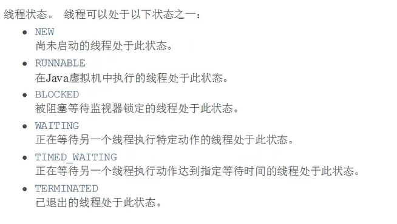
使用Thread.getState()观测线程状态
package 多线程;
import static java.lang.Thread.sleep;
public class 观测线程状态 {
public static void main(String[] args) {
Thread thread = new Thread(()->{
try {
sleep(1000);
} catch (InterruptedException e) {
e.printStackTrace();
}
});
Thread.State 未开始 = thread.getState(); //定义变量获取状态
System.out.println("未开始" + 未开始);
thread.start();
System.out.println("开始" + thread.getState()); //直接输出状态
try {
sleep(10);
System.out.println("阻塞" + thread.getState());
sleep(1000);
System.out.println("结束/死亡" + thread.getState());
} catch (InterruptedException e) {
e.printStackTrace();
}
}
}
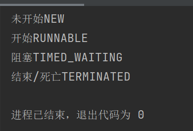
线程停止
线程最好自然停止，若定义了循环等无法自然停止的情况，最佳方案是在线程类中定义一个stop()方法人为使它自然停止
不建议使用自带的stop()等方法强制停止线程
例如：
package 多线程;
public class 线程停止 {
public static void main(String[] args) {
线程 xc = new 线程();
for (int i = 0; i < 5; i++) {
new Thread(xc).start();
System.out.println(i);
if(i == 1){
xc.stop();
System.out.println("线程结束");
}
}
}
}
class 线程 implements Runnable{
private boolean flag = true;
@Override
public void run() {
while (flag){
System.out.print("running...");
}
}
public void stop(){ //人为定义stop，用于停止线程
this.flag = false;
}
}
这是在main()中使子线程自然停止的方法，不过这样给我的感觉是仍有缺陷（不能立即停止线程运行），所以能在线程中停止就在线程中停止，尽量不要将停止工作交给主函数
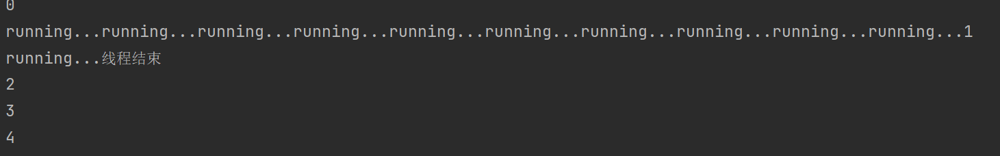
可以看到当mian()中调用stop()后，线程又运行了一次，这就是无法立即停止
线程休眠
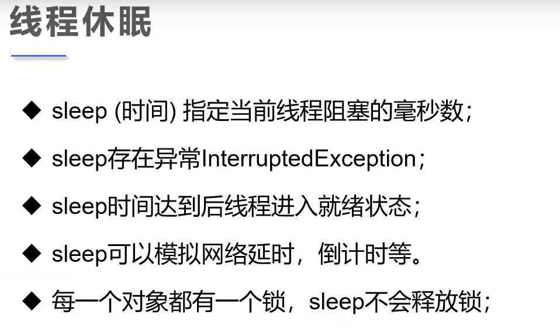
同正常使用，sleep可以让程序延时/暂停运行
多线程中使用sleep需要抛出/监测处理InterruptedException异常
package 多线程;
public class 线程休眠倒计时 {
public static void main(String[] args){
Runnable runnable = ()->{
for (int i = 10; i >= 0; i--) {
System.out.println(i);
try {
Thread.sleep(1000); //线程休眠1秒
} catch (InterruptedException e) {
System.out.println("错误");
}
}
};
new Thread(runnable).start();
}
}
线程礼让
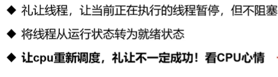
简单来说：
线程礼让就是暂停原来正在执行的线程，让正在执行的线程回到就绪状态与其他线程重新开始竞争
当正在执行的线程再次竞争成功运行时，就是礼让失败
package 多线程;
public class 线程礼让 {
public static void main(String[] args) {
Runnable runnable = () -> {
System.out.println(Thread.currentThread().getName() + "线程开始执行");
Thread.yield();
System.out.println(Thread.currentThread().getName() + "线程执行完毕");
};
new Thread(runnable,"a").start();
new Thread(runnable,"b").start();
}
}
礼让成功：
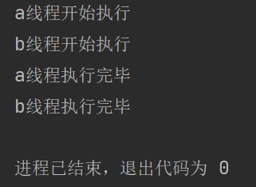
礼让失败：
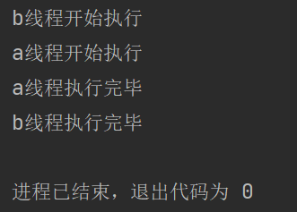
线程强制执行
join()可让一个线程强制执行
即暂听其他所有线程，直到指定线程执行完毕
使用时要抛出异常
package 多线程;
public class 线程强制执行 {
public static void main(String[] args) throws InterruptedException{
Runnable runnable = ()->{
for (int i1 = 0; i1 < 1000; i1++) {
System.out.println("runnable" + i1);
}
};
Thread thread = new Thread(runnable);
thread.start();
for (int i = 0; i < 100; i++) {
if (i == 20) thread.join();
System.out.println("main" + i);
}
}
}
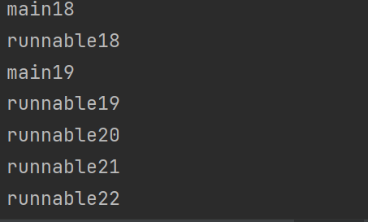
当i == 20时开始强制执行runnable线程，直到runnable线程执行完才继续主线程
线程优先2级
首先明确一点，优先级高的线程不一定先调用
线程的调用由CPU决定,优先级大小只是分配给线程的资源多或少
可以这么理解
cpu是抽奖的玩家，线程是奖品，线程优先级表示中奖的概率
一般肯定是先抽到概率高的再抽概率低的，但总有欧皇不当人子，次次出金
这就是为什么优先级高不一定先调用
Thread.getPriority() 获取优先级
Thread.setPriority()设置优先级
- 默认优先级为 5
- 最低优先级为 1
- 最高优先级为 10
设置不在1-10范围内会抛出异常
package 多线程;
public class 优先级 {
public static void main(String[] args) {
//获取主线程优先级(默认优先级)
System.out.println(Thread.currentThread().getName() + "--->" + Thread.currentThread().getPriority());
Thread thread = new Thread(() -> {
});
Thread thread1 = new Thread(thread);
Thread thread2 = new Thread(thread);
Thread thread3 = new Thread(thread);
Thread thread4 = new Thread(thread);
thread1.setPriority(3); //设置优先级为3
thread3.setPriority(Thread.MIN_PRIORITY); //设置优先级为最低
thread4.setPriority(Thread.MAX_PRIORITY); //设置最高优先级
thread1.start();
thread2.start();
thread3.start();
thread4.start();
System.out.println(thread1.getName() + "--->" + thread1.getPriority()); //优先级为3
System.out.println(thread2.getName() + "--->" + thread2.getPriority()); //默认优先级
System.out.println(thread3.getName() + "--->" + thread3.getPriority()); //最低优先级
System.out.println(thread4.getName() + "--->" + thread4.getPriority()); //最高优先级
}
}
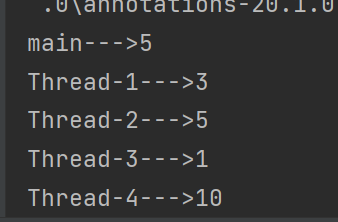
守护线程
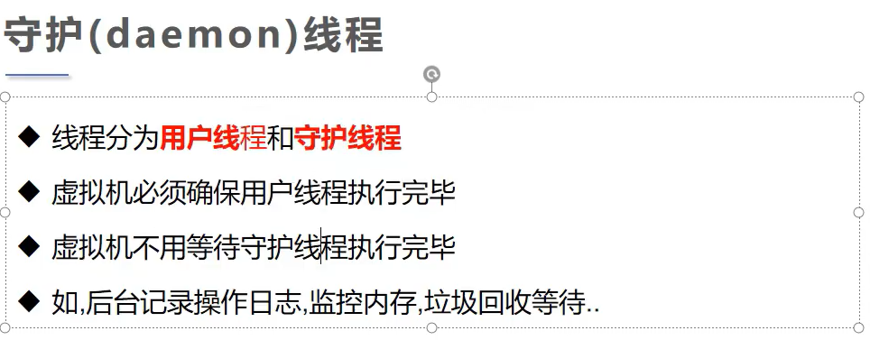
**Thread.setDaemon()方法用于设置守护线程**
用户线程默认为Thread.setDaemon(flase)不需要我们特意定义
守护线程需要我们定义为Thread.setDaemon(true)
守护线程经常被用来执行一些后台任务
package 多线程;
public class 守护线程 {
public static void main(String[] args) {
for (int i = 0; i < 100; i++) {
System.out.println("这是用户线程");
}
Thread thread = new Thread(()->{
while (true) { //设置死循环
System.out.println("这是守护线程");
}
});
thread.setDaemon(true); //设置守护线程
thread.start();
System.out.println("用户线程结束");
}
}
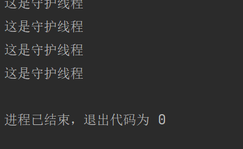
用户线程结束，守护线程随之结束
并发问题
当多个线程操控同一个对象时，会出现并发问题
例如：
package 多线程;
public class 并发问题 implements Runnable {
public static void main(String[] args) {
并发问题 bf = new 并发问题();
new Thread(bf, "小明").start();
new Thread(bf, "小华").start();
new Thread(bf, "小红").start();
}
@Override
public void run() {
int num = 10;
while (true) {
System.out.println(Thread.currentThread().getName() + "抢到了第" + num + "张票");
num--;
if (num < 1) break;
}
}
}
这就是一个多个线程调用同一个对象时遇到的最典型的并发问题
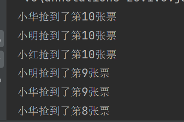
可以直观的看到第10张票被三个人抢到了，在安全领域中，这就是一种条件竞争
线程同步和锁
线程同步和锁是对并发问题发处理
线程同步
线程同步即在多个线程调用一个对象时，每个线程对对象的影响都会同步到对象上
为了实现这个目的，引入了队列的概念
队列
队列即将要使用相同对象的线程进行“排队”，使之依次完成对此对象的调用
要“排队”的线程会进入对象的等待池
锁
锁确保了一个对象在同一时间只能被一个线程调用
每个对象都有 “一把锁”
队列中的线程会依次拿到 “锁” 对对象进行调用，确保同步的安全性
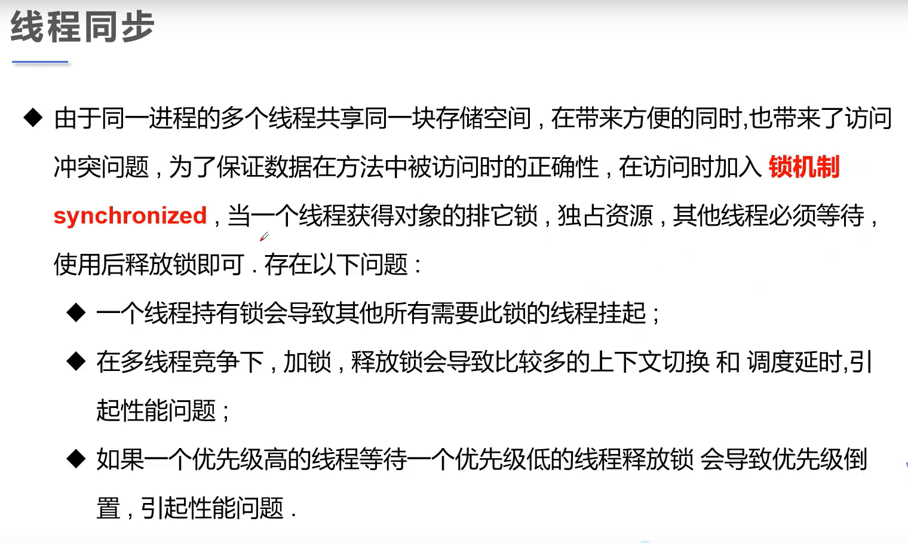
同步方法
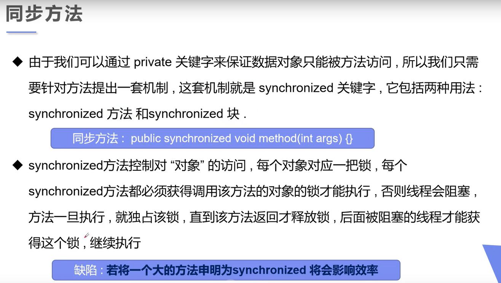
package 多线程;
public class 同步方法 {
public static void main(String[] args) {
Piao piao = new Piao();
new Thread(piao,"小明").start();
new Thread(piao,"小华").start();
new Thread(piao,"小红").start();
}
}
class Piao implements Runnable{
@Override
public synchronized void run() { //同步方法
int num = 10;
boolean top = true;
while (top){
System.out.printf("%s抢到了第%d张票%n", Thread.currentThread().getName(), num);
num--;
if(num == 0) top = false;
}
}
}
同步块
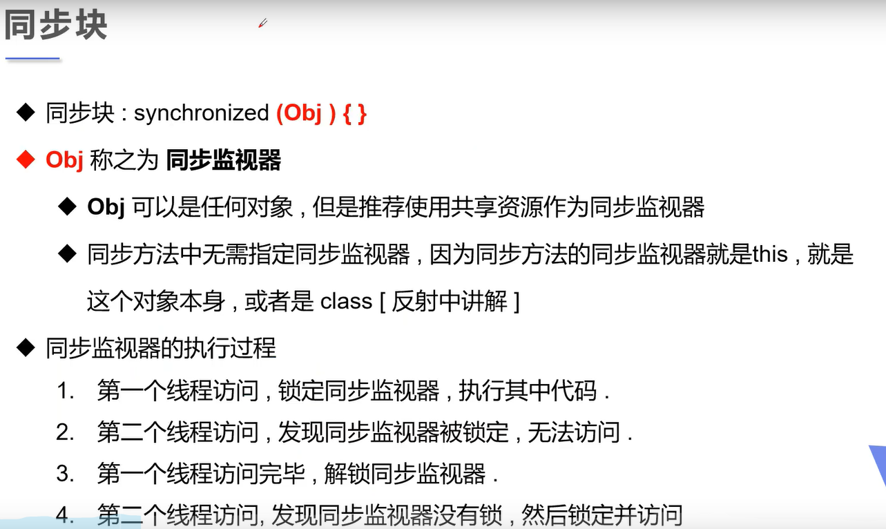
package 多线程;
public class 同步方法 {
public static void main(String[] args) {
Runnable runnable = () -> {
int num = 10;
boolean top = true;
while (top) {
System.out.printf("%s抢到了第%d张票%n", Thread.currentThread().getName(), num);
num--;
if (num == 0) top = false;
}
};
synchronized (runnable/*线程共享资源*/) { //定义同步块
new Thread(runnable, "小明").start();
new Thread(runnable, "小华").start();
new Thread(runnable, "小红").start();
}
}
}
死锁
package 多线程;
public class 死锁 {
public static Object t1 = new Object();
public static Object t2 = new Object();
public static void main(String[] args) {
new Thread() {
@Override
public void run() {
synchronized (t1) {
System.out.println("Thread1 get t1");
try {
Thread.sleep(100);
} catch (Exception e) {
}
synchronized (t2) {
System.out.println("Thread2 get t2");
}
}
}
}.start();
new Thread() {
@Override
public void run() {
synchronized (t2) {
System.out.println("Thread2 get t2");
try {
Thread.sleep(100);
} catch (Exception e) {
}
synchronized (t1) {
System.out.println("Thread2 get t1");
}
}
}
}.start();
}
}
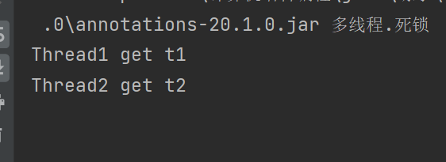
Lock锁
lock是基于synchronized的进一步优化，即将不可见的隐性锁变为了显性锁
使用
lock锁需要new ReentrantLock()(译为可重入锁)以
lock.lock()定义锁的开启（加锁）以
lock.unlock()定义锁的结束（解锁）建议使用
Lock时用try包裹lock.lock()以及加锁的语句用
final包裹lock.unlock()
package 多线程;
import java.util.concurrent.locks.ReentrantLock;
public class Lock锁 {
public static void main(String[] args) {
Runnable runnable = () -> {
int num = 10;
boolean top = true;
while (top) {
System.out.printf("%s抢到了第%d张票%n", Thread.currentThread().getName(), num);
num--;
if (num == 0) top = false;
}
};
ReentrantLock lock = new ReentrantLock();
try {
lock.lock();
new Thread(runnable, "小明").start();
new Thread(runnable, "小华").start();
new Thread(runnable, "小红").start();
} finally {
lock.unlock();
}
}
}
线程协作（生产者消费者问题）
线程通信
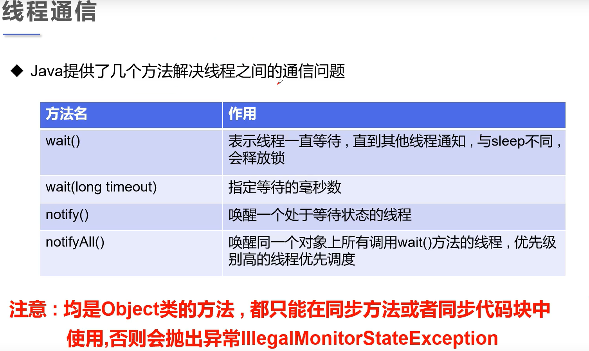
管程法
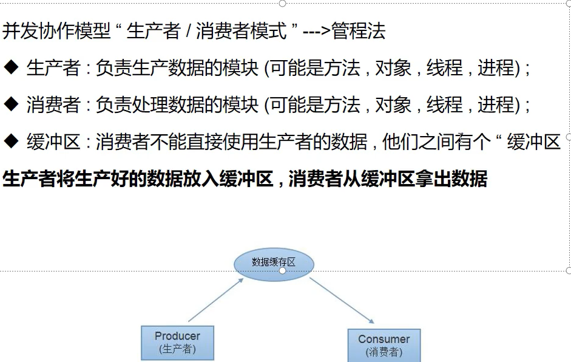
线程池
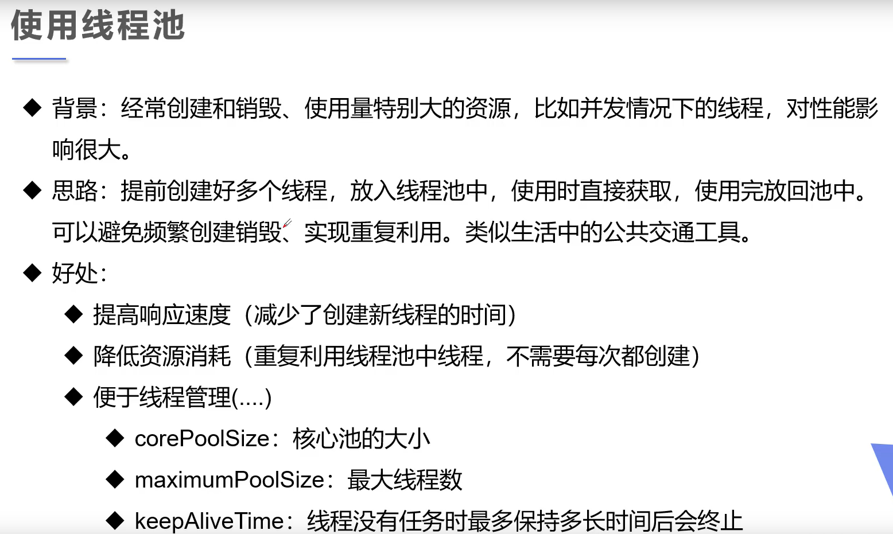
ExecutorService类是真正的线程池类
Executors是线程池工具类
ExecutorService service = Executors.newFixedThreadPool(1); 创建线程池
service.shutdown()关闭线程池
使用
ExecutorService类遵循三个步骤创建：
ExecutorService service执行：
ervice.execute()获取（可选），详请见重写
Callable类创建线程关闭：
service.shutdown()
package 多线程;
import java.util.concurrent.ExecutorService;
import java.util.concurrent.Executors;
public class 线程池 {
public static void main(String[] args) {
//创建
ExecutorService service = Executors.newFixedThreadPool(10);
//执行
service.execute(new 线程123());
service.execute(new 线程123());
service.execute(new 线程123());
//关闭
service.shutdown();
}
}
class 线程123 extends Thread{
public void run() {
System.out.println(Thread.currentThread().getName()+"线程");
}
}